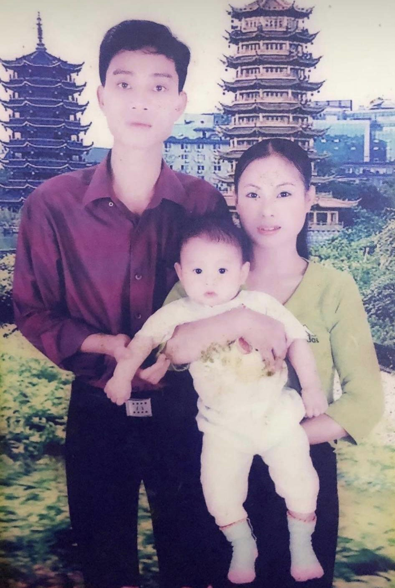
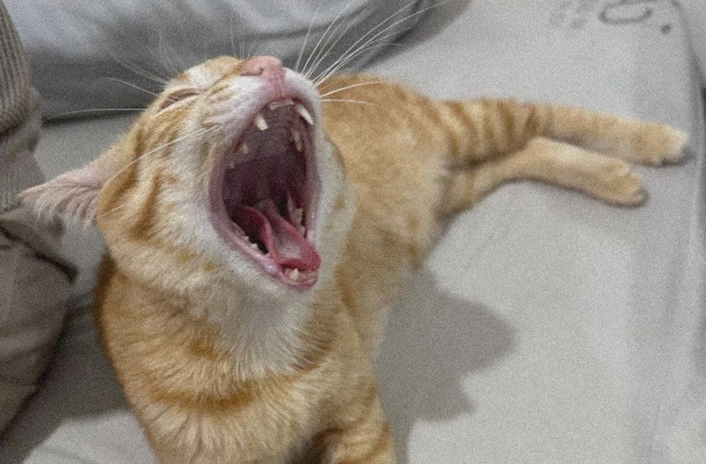

Mô tả Gia Đình
Đây là một gia đình hạnh phúc gồm bố, mẹ và hai đứa con. Chúng tôi thường xuyên dành thời gian cho nhau và tạo dựng những kỷ niệm đáng nhớ. Mẹ tôi thường nấu cho tôi ăn gà rán vì tôi rất thích ăn còn bố tôi hay dẫn tôi ra biển vì tôi yêu biển. Gia đình chúng tôi luôn cố gắng vì nhau để thực hiện những giấc mơ chung và ý tưởng riêng của mỗi người.
Mô tả Vật Nuôi
Chúng tôi có một con mèo tên là Luna. Luna rất trung thành và năng động, còn rất tinh nghịch và thích âu yếm. Nó thường xuyên đi lạc và chúng tôi phải tìm nó về.
